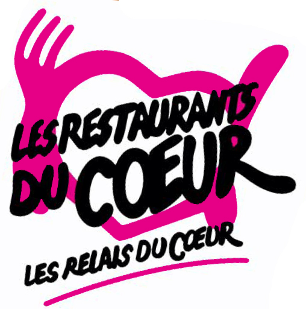
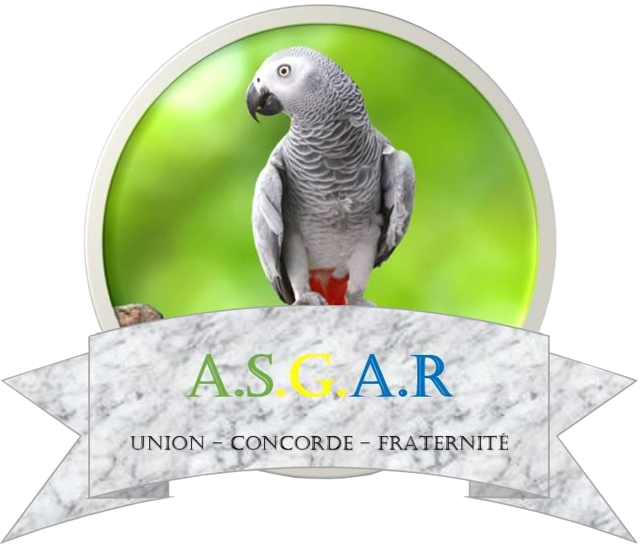

BOUDOH
Dhan-aurel
Developpeur web & mobile
Avec un parcours plutôt atypique de l'économie à technicien en maintenance informatique et avec une passion pour les nouvelles technologies, mon voyage m'a conduit à la “Normandie Web School”. Je suis une formation de “Chef de projet digital” option “Développement web”. Dynamique et motivé, je possède un sens aigu du travail en équipe. J’aime le contact direct avec les clients et sais m’adapter aux exigences professionnelles. Je serais ravi de mettre mon expérience diversifiée dans l’univers de l’informatique à votre disposition pour un stage de développeur web.Vous recherchez un couteau suisse? moi, je recherche un stage. Alors et si on faisait “un date”?
Formation
2021-2023: Bachelor Chef de projet digital - (Année Preparatoire: Developpement web,
Design graphique et web-Marketing), Normandie web school
2020: Licence 2 en Economie des Entreprises - Université de Pise, Italie
2018: CILS Certificat d’Italien comme langue Etrangère –
Spazio Linguistico Michelangelo, Libreville Gabon
2016: BACCALAUREAT STMG - Lycée Technique OMAR BONGO, Libreville Gabon
Compétences Techniques et Professionnelles
Bureautique (Word, Excel, Powerpoint, Publisher)
Informatique (Installation et désinstallation de système d’exploitation,
Maintenance logiciels , Developpement HTML, CSS, Python, InDisign, Illustrator, Photoshop )
Connaissances métiers (Comptabilité générale, Comptabilité Fournisseur et Client)
Avril / Juin 2021: Assistant consultant - MadHouse consulting, 76000 Rouen
Modélisation de données SAP HANA,SAP BO, Conseil SI (Systeme d’Information)
Octobre / Novembre 2020 : Stagiaire Informatique - Bantu Afro Brasileiro / Promaritime – Rouen
Maintenance Informatique, Reporting
2016 / 2019: Technicien de Maintenance - Cyber café de Malik Libreville, GABON
Installations système d’exploitation (Windows 7, 8, et 10; Ubuntu), Anti-virus (Avast, Norton), Logiciels divers (Office, VLC etc...), Formations utilisateurs, installations d’applications diverses.
Italien (Bilingue)
Anglais (A2)
Cinéphile
Voyage (Italie, Gabon, Suisse, Allemagne)
Informatique (Nouvelles technologies)
Mangas
Lecture fantastique
 Restos du coeur / Saint hillaire : Bénévole, Responsable Informatique
 ASGAR (Association des Gabonais de Rouen): Membre Bénévole